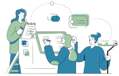
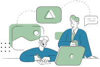

Movlex
Responsive website
Movlex is a responsive website for local theatre offering reasonable pricing and helps users buy cinema tickets hassle free with easy to use website in any devices on the go.
Project Overview
The product
Movlex is a start-up theatre that offers affordable cinema tickets pricing options. The typical user is between 18 - 45 years old, and most users are couples, college students and parents. Movlex goal is to make buying cinema ticket hassle free and easy for all types of users.
Project Duration
Nov 2021 - Jan 2022
My Role
UI/UX designer leading the Movlex responsive website design
Scope of work
Conducting interviews, paper and digital wireframing, low and high-fidelity prototyping, conducting usability studies, accounting for accessibility, and iterating on designs and responsive design.
Tools Used
Adobe illustrator, Adobe XD, Photoshop, Google Forms, Google sheet

The problem
Most of the existing online cinema websites have cluttered designs, inefficient systems for browsing through movies, and confusing checkout processes.
The goal
Design a Movlex website to be user friendly by providing clear navigation, easy seat selection and offering a fast checkout process.
Process
Empathize
USER RESEARCH
Summary
I conducted user interviews, which I then turned into empathy maps to better understand the target user and their needs. I discovered that many target users watch movies in theatre to experience new movies in large screen and enjoy their time relaxing when they need a break or spent time with their loved ones.
However, many cinema websites are overwhelming and confusing to navigate, which frustrated many target users. It was also observed that users would like to make an advance seat selection of their choice so that they can sit with their friends or family comfortably.
One User Group
Consisting of 4 users
Pain points
3 main scope to improve
Empathy Map
- Waiting in queue line to get tickets is just wasting their time
- I want to know the rating of the movie
- If there is place to let see and choose the best seat to enjoy theatre experience
- I like movies that comes with promo premiere
- Is this movie something I want to watch
- What are people saying about this movie
- I want to share my thoughts on this movie
- Have my friends heard of this movie
- Reads reviews
- Keep track of movies that match their taste
- Staying at home during off time
- Checking promo
- Check the movie time to best suit their schedule
- Overwhelmed with all the information online
- Confused about which best matches their taste
- Excited about going to watch it with friends
- Curious about the movie
Pain points
Research revealed that user were student, parents and full-time workers with limited time availability preferring to book the movie tickets online. Other user problems included website navigation, accessibility and user reviews and feedbacks.
Navigation
Cinema website designs are often busy, full of advertisement banners which results in confusing navigation
Accessibilty
Most cinemas doesn’t provide accessible seating option and closed captioning
Reviews
Cinema websites doesn’t provide viewers review for both movies and theatre experience
Persona
Based on the user group interviewed, two persona were created to represent common needs of the user that can help in creating as base to built the website.
Problem Statement
Emma is busy mom and Entrepreneur who needs to select seats for her family and search exact date, time and reviews because watching family movie comfortably with kids is enjoyable experience.
Goal Statement
Our Movlex website will let Emma search movies with easy navigation and make seat selection easily.
Measure
We will measure effectiveness by tracking search query of first 5 user’s.
Hypothesis
If Emma browse our Movlex website, then they can search for their favourite movies with ease.
Problem Statement
Thomas is a Sales Manager with good coordination skills who needs a web/app to pre-purchase tickets because he wants to avoid waiting in queue.
Goal Statement
Our Movlex website will let users prebook movie tickets with easy seat selection and WCAG pass text readability.
Measure
We will measure effectiveness by tracking seat selection process and WCAG contrast ratio.
Hypothesis
If Thomas use the Movlex website, then they can easily preorder movie tickets online with choice of their seat and legible website texts.
Define
User story
Building user story from the Emma's persona point of view helped to inspire and inform design decisions.
As an Entrepreneur and busy mom, I want to search for a movie with exact seat, date, time and reviews so that we can enjoy family movie comfortably together.
User Journey Map
I created a user journey map of Emma’s experience using the site to help identify possible pain points and improvement opportunities.
Ideate
Competitive audit
One way to come up with my ideas for design solutions was to compare the website I am going to design with existing websites from similar organisations by conducting a competitive analysis to deliver effective and unique designs that offer a new solution to user problems!
First, an online search for theatre website competitors was completed. Then, the competitors name and type of competitor were added to the Google sheet. For my audit, I decided on a total of three competitors: two indirect competitors and one direct competitor.
3 competitors
Consisting one direct and two indirect competitors
Steps followed
- Outlining the goals for the competitive audit
- Creating a list of competitors
- Research competitors’ website
- Analysing and summarising the findings

Audit report
Some opportunities identified from the competitive analysis are as follows:
- Provide ‘search’ feature with filter option to offer user with more option to find their best search experience
- Provide accessibility features especially language option, large pictures and tab order structure
- Provide loyalty benefits, rewards, referrals or perks for returning users
How Might We (HMW) and Crazy Eights
With the user's pain points and problem statement, I started the How Might We exercise to begin thinking of ideas to solve Emma’s issues.
- How might we make the movie tickets booking website experience fun, easy to use, and engaging?
- How might we design something that helps Emma book movie tickets on her choice of date, time and seats?
- How might we bring movies to Emma or highlight a perfect choice for her to easily access and book?
After this, I completed the Crazy Eights exercise with Emma's issues with How Might We questions in mind.
Using the Crazy 8's exercise, I came up with different designs that I could pull ideas from.
Information architecture (IA)
When planning the designs for a responsive website in its early stages, it’s important to create a clear organisational path. That's where I created a sitemaps to make my design decision easier.
Nevertheless, difficulty with website navigation was a primary pain point for users, so I used that knowledge to create a sitemap. My goal here was to make strategic information architecture decisions that would improve overall website navigation. The structure I chose was designed to make things simple and easy.
wireframes
Paper wireframes
Next, I sketched out paper wireframes for each screen in my app, keeping the user pain points about navigation, browsing, and checkout flow in mind.
The home screen paper wireframe variations to the right focus on optimising the browsing experience for users.
Screen size variations (Paper sketch)
Because Movlex’ customers access the site on a variety of different devices, I started to work on designs for additional screen sizes to make sure the site would be fully responsive.
Digital wireframes
Moving from paper to digital wireframes made it easy to understand how the redesign could help address user pain points and improve the user experience. Prioritising useful button locations and visual element placement on the home page was a key part of my strategy.

Screen size variations (Digital wireframes)
Since users browse from a variety of devices, I felt it was important to optimize the browsing experience for a range of device sizes, such as mobile and tablet so users have the smoothest experience possible.

Prototype & Test
Low-fidelity prototype
To create a low-fidelity prototype, I connected all of the screens involved in the primary user flow of booking ticket, seat selection adding an item to the cart and checking out. At this point, I had received feedback on my designs from users survey about things like placement of buttons and page organisation. I made sure to listen to their feedback, and I implemented several suggestions in places that addressed user pain points.
Clink to view the Movlex's cinema low-fidelity prototype
Usability study
After conducting survey, I had an opportunity to review, analyse, and synthesise the data from my study and apply it to make changes to my design and improve the user experience.
Time
20 - 30mins for each users
Participants
Total of 5 participants
Study type
Unmoderated Usability Study
Location
Canberra, Remote
Findings
Selection
Once at the movie list, there were only date and time selection and cannot proceed thereafter.
Review
Users weren’t able to leave review after watching movie nor they can see any movie ratings
Notification
If there is a way to notify if the movies, foods and drinks are added to the cart and edit the list.
Refinement & Mockup
STYLE GUIDE
In addition to designing app logo and branding, I also created style guide which includes visual styles, UI components and elements. Compiling all of this information into a comprehensive design system ensures that all the different elements in my designs will carry through to the final product.

Refinements
Based on the insights from the usability study, I made changes to improve the site’s navigation flow. One of the changes I made was adding the “Stars rating” left by users. This allowed users to select movies based on the ratings and reviews.
In addition, to make the checkout flow even easier for users, I added a cart notification to allow users check what they have added to their cart and also dot notification icon to indicate the items in the cart.

Mock up
Screen size variations
I included considerations for additional screen sizes in my mockups based on my earlier wireframes. Because users browse from a variety of devices, I felt it was important to optimize the browsing experience for a range of device sizes, such as mobile and tablet so users have the smoothest experience possible.
High-fidelity prototype
My high-fidelity prototype followed the same user flow as the low-fidelity prototype, and included the design changes made after the usability study, as well as several changes suggested by surveyed participants.
Clink to view the Movlex website high-fidelity prototype
accessibility
Typography
I used headings with different sized text for clear visual hierarchy
WCAG
I used WCAG AAA passed colours for legible viewing
Images
Used detailed imagery for movies to help all users easily make accurate selection
Landmarks
I used landmarks to help map out regions of an interface to navigate the site, including users who rely on assistive technologies
Going forward
Takeaways
Impact: Our target users shared that the design was intuitive to navigate through, more engaging with the images, and demonstrated a clear visual hierarchy.
What I learned: I learned that even a small design change can have a huge impact on the user experience. The most important takeaway for me is to always focus on the real needs of the user when coming up with design ideas and solutions.